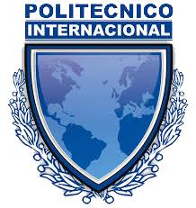

QUIÉNES SOMOS
Somos un grupo por empresarios que creen en Colombia, deseosos de retribuir a la sociedad y al país los rendimientos económicos originados por sus actividades. El Politécnico Internacional es una Institución de Educación Superior constituida como una fundación privada sin ánimo de lucro, la cual contribuye a hacer realidad los sueños de la juventud colombiana.
Es una Institución comprometida con el desarrollo laboral de sus egresados y es reconocida por las destacadas competencias prácticas y por los altos estándares de calidad y servicio que desarrolla en sus estudiantes; los cuales tienen una gran acogida en el sector
productivo.